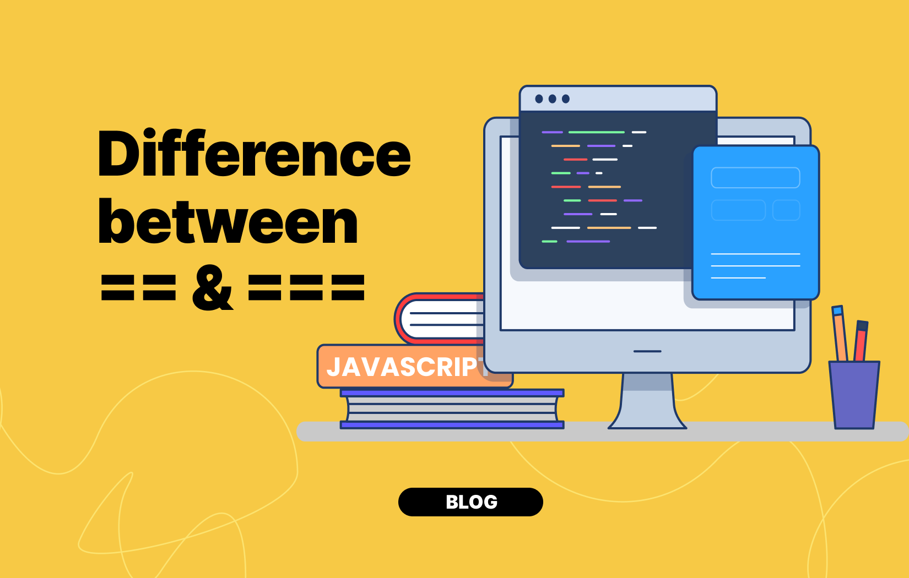

C++ or Java for beginners
What to choose between C++ and Java for college placments? Best for beginners, Placements and competitive programming !
6th August, 2021

Choosing your first programming language is one of the most important and hard things to do if you are a beginner. You are not the only one out their struggling in choosing your first programming language to get started with between Java and C++. You must came across this conclusion that as a beginner one must choose between Java and C++, which has now created a confusion that which one is best for you. Java and C++ are one of the top used programming languages in the world, both java and c++ are object oriented programming language and commonly used language for placement preparation. So, no need to worry I will help you to get out of this and will make it easy for you to choose between the two.
WHY TO CHOOSE JAVA ?
Java is a class- based , pure object oriented programming language. It is developed in 1995 by James Gosling, and it’s owned by Oracle. Java is being used in more them 3 billion devices.
Java is a good programming language to get started with as compare to c++. Now, Let’s know more why java is for you?
Java is one of the most used language in industries and it is also used by big tech gaints like amazon, deshaw and most of the other product based companies or fintech companies. So, for placement perspective it would be the best suitable language for you.
If your main goal and focus is towards getting a job as a software developer then java will be the best language for you, because you can learn data structures for placement preparation in it and can even do development using java.
Java also has backend frameworks like SpringBoot which is highly used in industry so you can also learn backend programming just getting started with one language that is java.
Moreover, Java is the main language that backs android , that means by learning java you can also build android applications or apps. Though Kotlin is now the official language for android development but it also executes on JVM ( Java virtual machine ).
It also depends upon your goals that which language might be good for you. So, if your primary focus is getting a job at a software company then java is for you.
Learning java will also make you illegible for a JAVA Developer role , if you are thinking are there language specific roles then yes there are language specific role and the most commonly role is for java and thee is very less of such language specific role in c++.
Java does not have concepts of pointer unlike C++. If you are wondering what the hell is pointers then, I wanna tell you that you don’t need to worry about knowing that for now but I want to inform you that it is one that topic which makes a beginners life hell 😝
Java is also the 2nd most largest used language in competitive programming, C++ being the first one. If you more inclined towards competitive programming then C++ is more preferable but if you just wanna do it for fun and not too vigorously to be the top in the world then Java is good to go to.
WHY SHOULD YOU CHOOSE C++?
Now, C++ one of the other popular and commonly known programming language in the world. C++ was developed by Bjarne Stroustrup, as an extension to C language. C++ is highly used programming language because it gives programmers a high level of control over system resources and memory.
C++ is the top programming language used in competitive programming because its faster language. It is a powerful programming language with was build to develop operating system, games , browsers.
So, making it more clear for you to choose C++, if you are intrestest into game development side I would highly suggest you choosing C++ or if you want to make your career in competitive programming , or more inclined towards becoming top Competitive programmer of india or the world , choose C++.
Conclusion
Now, concluding what you learned and making your work easy , go through these bullet points :-
Why Java ?
- If you want to do backend development and make android apps.
- If you want to do competitive on a casual note (Still there are many top ranked java Competitive coders in world).
Why C++ ?
- If you are more inclined towards competitive coding.
- If you want to develop games or work on hardware dedicated projects.
On the closing note I just want to tell you that it doesn't matter what you choose, later you will end up with being a JAVASCRIPT Developer 😆.